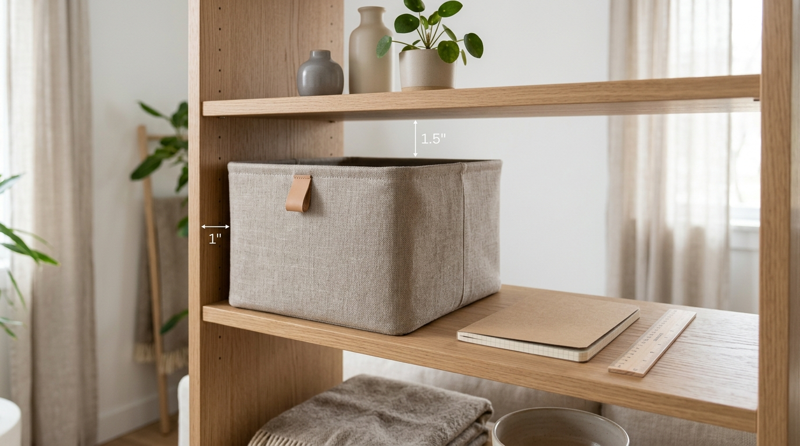

The moment a small apartment begins to feel crowded, our natural instinct is to start shopping. We open an app, search for storage bins, acrylic drawer dividers, over-the-door racks, and multi-tier carts, assuming that the right product will finally bring order to our space.
A few days later, the boxes arrive. But after unboxing, a frustrating reality sets in:
- The bins are slightly too deep for the cabinet shelf, preventing the door from closing
- The rolling cart fills up with random miscellaneous items nobody uses
- The acrylic dividers take up more physical space than the items they organize
- The closet still feels chaotic, but now it has five expensive plastic containers sitting on the floor
When storage organizers fail to solve clutter, we often think we bought the wrong brand or need even more storage. But in most apartments, that is not the real issue.
Most storage problems should be diagnosed before a storage product is purchased. When you buy containers first, you are trying to fit your life into a plastic box. When you diagnose your space first, you buy only what genuinely solves a specific physical problem.
Here are the 5 critical storage decisions to make before spending a single dollar on small apartment storage solutions.
Before You Buy Storage, Diagnose the Problem
In traditional organizing advice, shopping is treated as step one. You see a pristine, color-coded pantry on social media and immediately buy ten matching glass jars.
In reality, buying storage before understanding your routine creates three distinct issues:
- Mismatched Capacity: You buy three large bins when you only had four small items, leaving wasted empty space inside the organizer.
- Added Friction: Adding lids, latches, and stacked boxes creates extra physical steps to access everyday items, leading to clutter piling up on top of the bins instead.
- Visual Congestion: Lining small rooms with excessive storage furniture shrinks your visual floor area, making a compact apartment feel even smaller.
To avoid common pitfalls that cost you space, explore our guide on 5 small apartment storage mistakes costing you valuable space.
1. What Actually Needs a Home?
The first decision is distinguishing between a storage problem and a possession problem.
When items pile up on a dining table or entryway bench, ask: “Do these items need a better storage container, or do they simply not belong in my active living space?”
- A Possession Problem: You have five duplicate spatulas, expired spices, or clothes you haven't worn in two years. Buying a bigger spice rack or extra hangers only organizes clutter you don't need.
- A Placement Problem: You use your laptop charger daily in the living room, but its assigned home is in the bedroom closet across the hall.
- A Genuine Storage Problem: You use three cutting boards daily, but your narrow cabinets lack vertical dividers, forcing them to lie in an awkward stack.
Before browsing organizers, gather the specific items causing clutter. If you remove the items you don't use, you may find your existing cabinets already have plenty of room.
2. How Often Do You Use It?
Storage should reflect your real-life routine, not rigid aesthetic categories. Establish an access hierarchy based on frequency:
The 3-Tier Access Hierarchy
1. Daily Essentials → Easiest Reach:
Items accessed 1–3 times every day (coffee mugs, everyday shoes, keys, facial cleanser). These belong in prime, single-motion storage between waist and eye level. Never bury daily essentials in lidded bins.
2. Weekly Items → Convenient Access:
Items used 1–2 times per week (baking sheets, vacuum attachments, extra bath towels). These belong in secondary drawers, lower cabinet shelves, or under-bed pull-outs.
3. Occasional & Seasonal → Deep Storage:
Items used monthly or seasonally (holiday decor, winter coats, luggage, tax paperwork). These are the only items that belong in high closet bins, deep back shelves, or under-bed vacuum bags.
When you organize by frequency rather than category, you stop fighting for space with things you rarely touch. For daily habits that keep homes tidy, see our guide on 4 storage habits clutter-free renters swear by.
3. Where Do You Use It?
The third decision is spatial: store items at their physical point of use.
Transit distance creates friction. If returning an item requires walking into another room, opening a heavy closet door, and moving a stack of boxes, human nature defaults to leaving the item on the nearest counter.

Apply point-of-use placement across your apartment:
- Cleaning Supplies: Keep daily bathroom spray in the bathroom vanity, not in a central laundry closet downstairs.
- Cooking Tools: Store spatulas and olive oil directly beside the stovetop prep zone.
- Everyday Bags & Keys: Place a simple dish and hook right beside the entryway door where you take them off.
For a detailed breakdown of transit friction, read our complete guide on the point-of-use storage rule for small apartments.
4. What Shape Does the Space Require?
Never buy an organizer based on how it looks on a product page. Measure the usable three-dimensional clearance of your actual cabinet, shelf, or drawer:
The 3D Measurement Checklist
- Width: Measure the interior shelf width, accounting for cabinet hinges or door frames that protrude into the opening.
- Depth: Measure from the back wall to the inside of the closed door. Many standard bins are 14–16 inches deep, but standard rental upper cabinets are only 11–12 inches deep.
- Height & Clearance: Measure the vertical gap between shelves. Always subtract at least 1.5 to 2 inches of finger clearance so you can comfortably lift items out of the bin without pulling the entire container down.
- Obstructions: Check for plumbing pipes under sinks, drawer glides, electrical outlets, and baseboards.
For finding overlooked vertical opportunities without measuring mistakes, explore our tutorial on how to find and use dead space in a small apartment.
5. Can the Space Work Without an Organizer?
Before adding an item to your cart, test the 4-Step Anti-Overconsumption Ladder:
↓
2. REPOSITION → Shift items to their natural point of use
↓
3. GROUP → Neatly arrange like items together on existing shelves
↓
4. SIMPLIFY → Eliminate unnecessary packaging
If you complete these four steps and the space functions smoothly, you do not need to buy anything.
An organizer is only necessary when a specific mechanical problem remains—such as needing vertical shelf dividers to stop baking sheets from toppling over, or clear drawer bins to prevent tiny cosmetic bottles from rolling around.
To discover clever non-permanent storage spots already in your home, check out our guide on 6 hidden storage spaces you are probably missing in a small apartment.
The Simple Storage Decision Process
Whenever a storage bottleneck appears in your apartment, follow this 5-step diagnostic sequence:
| Step | Diagnostic Question | Action to Take |
|---|---|---|
| 1. IDENTIFY | What specific items are causing friction? | Remove clutter; isolate items needing homes |
| 2. PRIORITIZE | How often do I reach for these items? | Assign to Daily, Weekly, or Occasional zone |
| 3. PLACE | Where do I actually use them? | Move storage to direct point of use |
| 4. MEASURE | What are the exact height, depth, and width? | Measure shelf clearance and door swings |
| 5. THEN BUY | Does this specific tool solve the remaining gap? | Purchase only properly fitting, purposeful tools |
When you are ready for targeted, high-impact storage additions, browse our curated list of 7 tiny apartment storage upgrades that instantly create more space.
A Quick Before-You-Buy Checklist
Save this quick diagnostic checklist before purchasing any storage product:
The Pre-Purchase Storage Filter:
- □ I know the exact problem I am solving. (Not just "getting organized.")
- □ I gathered the specific items that need a home.
- □ I know how often I use these items (Daily vs. Occasional).
- □ I selected a location at their point of use.
- □ I measured width, depth, height, and door clearances.
- □ I tried decluttering and repositioning first.
- □ I know exactly why this organizer is necessary.
Usable Capacity vs. Maximum Capacity
A home is a living space, not a warehouse. Cramming every square inch of your apartment with stacked plastic bins maximizes storage capacity on paper, but makes daily life exhausting.
"The best small-apartment storage system isn't the one with the most organizers. It's the one that makes your home easiest to use."
When you diagnose first and buy second, your apartment stays open, functional, and calm.
Frequently Asked Questions
Always start by clearing flat surfaces and grouping like items together. Do not buy organizers until you have eliminated items you no longer use and identified where your everyday essentials naturally belong.
Measure from the back wall to the inside face of the cabinet door when closed. Upper rental cabinets are often 11–12 inches deep, while lower cabinets are 24 inches deep. Ensure your bins leave at least 1 inch of clearance so doors latch completely.
Clear bins are ideal for pantries, refrigerators, and medicine cabinets where visual inventory prevents food waste and duplicate buying. Fabric or opaque bins are better for open living room shelving and closets where hiding visual clutter creates a calmer look.
Are you 18-24 or a Student? Get 6 Months of Prime for $0!
Limited Time Offer (Ends Oct 9): Enjoy fast, free shipping, unlimited streaming, $0 food delivery (Grubhub+), fuel savings (10¢/gal), Prime Reading, unlimited Amazon Photos storage, and exclusive grocery deals. Claim your 6-month free trial of Prime for Young Adults today.
Try Prime for Free →